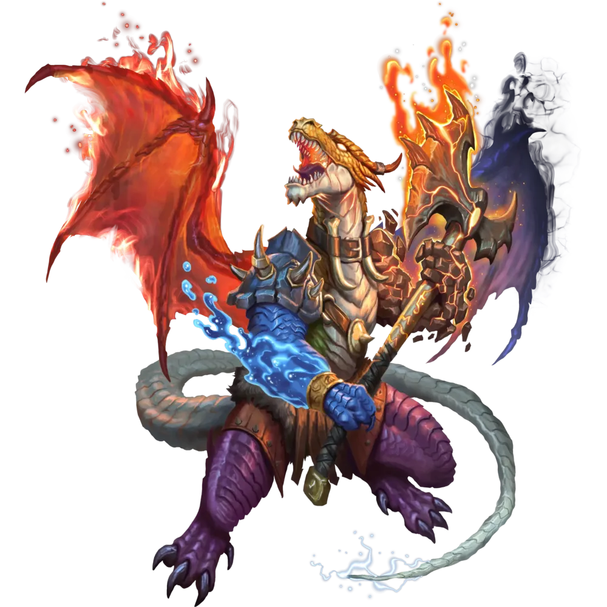

|
在众多类人种族的文化中，巨龙都是力量与强盛的象征。因此，再加上与生俱来的傲慢，巨龙往往很难承认事情出了差错。然而，有些巨龙体内奔涌着狂暴的魔法能量，这股能量一旦失控飙升，便会彻底改变它们的一生。有时，整支龙族血脉都会继承这种魔力，并在漫长的世代中延续下去。但对于这些所谓的“异类龙”而言，这股失控的能量究竟意味着什么？整个巨龙社会或许对它们不屑一顾，但它们强大的魔力却为其带来了无穷无尽的未开发潜能！ 你是一条流变龙，你的身躯充斥着过载的变化系魔力，因而时刻不停地发生异变。你是异类龙家族的一员。与大多数巨龙不同，你的关联伤害类型会从强酸、寒冷、火焰、闪电和雷鸣中随机决定，而你的吐息武器形态则会从15尺锥状、5尺宽30尺长的线状，以及射程30尺、半径5尺的爆发中随机决定。无论你的吐息武器是何种形状，都需要进行敏捷豁免。每当你提升等级时，你的关联伤害类型与吐息武器形态必定随机改变。此外，每当你完成一次长休时，你也可以选择令它们随机改变。最后，如果你遭受了极其惨重的创伤经历（例如濒临死亡），GM可以裁定你的关联伤害类型与吐息武器形态发生随机改变，每天最多触发一次。 巨龙特质属性值提升。你的力量或敏捷值提升2点。 年龄。任何年龄段的巨龙都可以举行永恒之光仪式，因此哪怕是一条刚完成仪式的初生永光龙，严格来说也可能已经活了数千岁。不过，仪式澎湃的魔法能量会洗去衰老的痕迹。从仪式中苏醒的初生永光龙洋溢着青春活力与无限潜能。尽管部分学者持不同看法，但只要不死于暴力或其他灾祸，永光龙的寿命与传统派巨龙同样漫长。 阵营。永光龙的龙族血统会强烈影响其信念，但影响程度远不如同血统的传统派巨龙。例如，银永光龙往往是善良的捍卫者，而黑永光龙则往往狡诈刻薄。然而，永光龙深知龙脉并非不可违逆的宿命。任何永光龙都可以完全抛弃先祖的旧习，去开拓属于自己的道路。 体型。除非一条永光龙将自身魔力专注于增大体型（许多永光龙都会这样做），否则它们的体型并不会比常见的类人种族更大。你的体型可在小型或中型之间自选。 速度。你的基础步行速度为30尺。 黑暗视觉。你同样具备传统派巨龙的敏锐感官。在距离你60尺范围内，你可以将微光光照视作明亮光照，将黑暗视作微光光照。你在黑暗中无法分辨颜色，只能看到灰度的影像。 龙之馈赠。你从巨龙职业所列的龙之馈赠中获得一项龙之馈赠。如果某项馈赠具有先决条件，你必须满足其先决条件才能获得它。 龙类。你的生物种类为龙类，而非类人生物。 天生武器。除常规的徒手打击外，你还获得两种天生武器攻击：啃咬攻击与爪击攻击。你的啃咬攻击造成1d6点穿刺伤害；你的爪击攻击造成1d4点挥砍伤害。 你必须至少有一只手空闲才能发动爪击攻击。 你在进行爪击攻击的攻击检定和伤害掷骰时可以使用敏捷代替力量，但啃咬攻击不适用。 语言。你能够说、读、写通用语和龙语。 不稳形态。你对抗会使你石化或变形的效应所进行的豁免检定具有优势，且你为逃脱擒抱而进行的属性检定也具有优势。 永光流变龙背景设定在所有龙族之中，流变龙最能深刻领悟“变化才是宇宙间唯一真正的恒常”，因为他们的躯体本就时刻处于流转不息的变化之中。既然如此，还有什么比举行永恒之光仪式――为了未来的无限可能而不可逆转地重塑自身灵魂――更能拥抱这份变化的呢？永光流变龙依然保留着浸润全身的变化系魔力，但与此同时也获得了在一定程度上掌控自身躯体与能力变化的主动权。不仅如此，这项仪式往往还能平复传统派流变龙在身体变化时常会经历的剧烈性格突变。最终，永光流变龙会展现出更高的稳定性，尽管那种多变的特质永远不会彻底消失。 只要传统派流变龙有心情结交同伴，传统派与永光流变龙之间往往相处得极为融洽。他们可能会因各自经历的形态变化而一拍即合，互相交流自己曾显现出的种种不同特征，也会彼此分享各自或好或坏的人生奇遇。有时，某条传统派流变龙会对永恒之光仪式的细节产生好奇，在连番追问数轮之后，便被说动得决定亲自举行仪式。永光龙倒并非有意去劝说传统派作出改变，只是他们谈起这段经历时总是热情高涨，令传统派流变龙很容易便被这股热忱感染。 对于一支冒险者小队而言，永光流变龙的加入不啻为一张难以捉摸的变数牌。他们可能是爱搞恶作剧的顽童，每当队伍氛围一成不变太久，就总想搅动一池春水；他们可能会提出不按常理出牌的破局奇招，让队伍无需消耗宝贵资源或在极短时间内便达成目标；他们也可能一时兴起便一声不吭地消失好几天，压根忘了告诉同伴自己去了哪里。同一条永光流变龙完全可能在短短一个月内把上述行径演个遍，有时着实令朋友们哭笑不得。 永光流变龙甚至可能在一生中辗转于一个又一个团队之间，始终寻觅着真正理解自己的同伴。在此过程中，每当流变龙回首审视自己取得的成就与行事的方式，往往也会对自己多一分领悟。在历经这般顿悟并以全新眼光重新审视自我之后不久，流变龙通常便能找到一支真正合拍的队伍。由此缔结的羁绊往往比流变龙过往经历的任何关系都要深厚牢固，当然其中的奇思妙想也丝毫不会减少。 许多永光流变龙喜欢顺应体内原始的混沌天性，成为势不可挡的野蛮人或不羁结社的德鲁伊。有些喜欢在世间播撒更多喧嚣骚乱，便可能拿起游荡者的盗贼工具，或是奏响吟游诗人的乐器。另一些永光流变龙则反倒青睐能赋予自己严格自律、用以平衡善变天性的职业；他们欣赏踏上冠军勇士或武僧之道所需的克己定力，并致力于磨砺那种心智或肉体上的精纯造诣。 万变不息，恒常如一传统派流变龙生命中唯一不变的常量，便是他们永远处于变化之中，以至于一切意外都成了家常便饭。正因如此，当一条流变龙举行永恒之光仪式后，骤然回归可预测的常态反而会在一段时间内令他们感到惊慌失措、头晕目眩。不过终究他们会适应过来，并开始用欢欣与笑声――而非恐惧与茫然――去拥抱突如其来的变故与惊喜。 延伸阅读：对应怪物图鉴：流变龙 ・ 主书通用巨龙种族特质 ・ 巨龙职业 ・ 本卷新增龙之馈赠 |
 流变龙（Metamorphic Dragon） |